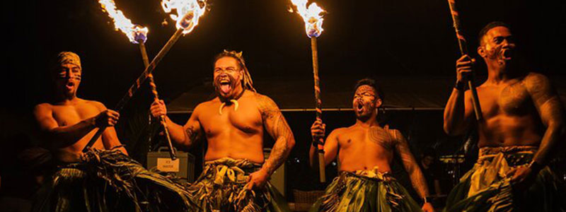
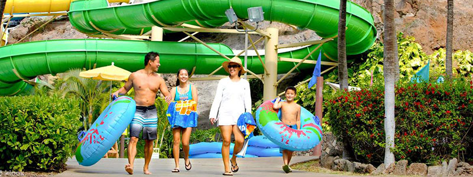
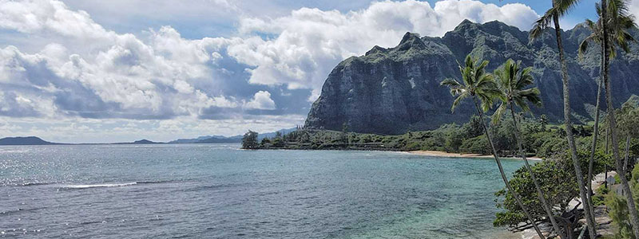
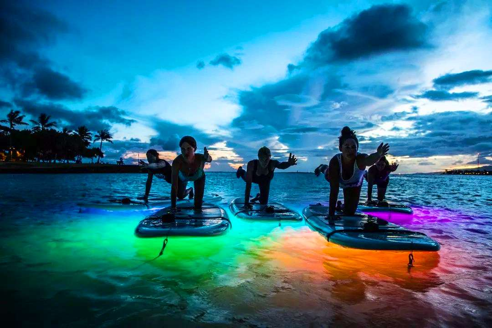
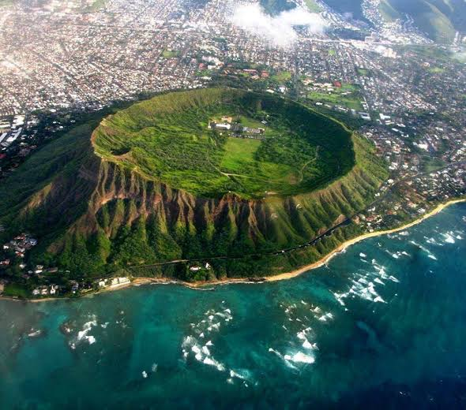
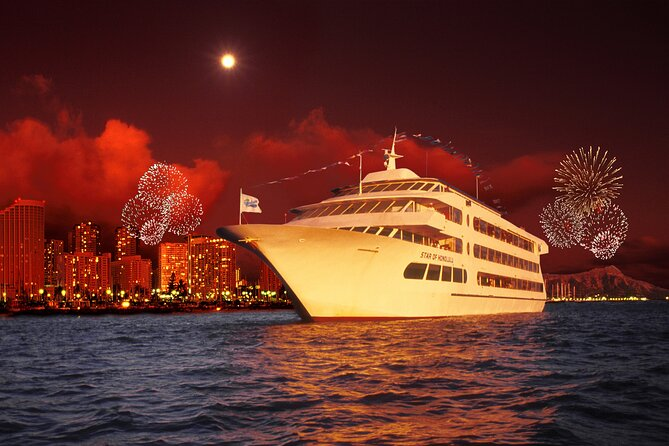

Dónde Comer
Encuentra aquí experiencias mientras comes en Honolulu
ver más
Encuentra aquí experiencias mientras comes en Honolulu
ver más
Descubre los mejores parques de la ciudad, horarios y las mejores atracciones para ti, tu familia y amigos.
ver más
¡Conoce las mejores playas de Honolulu!
ver másEn Waikiki encontrarás los mejores hoteles cerca a las playas de Honolulu. ¿te gusta más la cultura? ¡Downtown es tu lugar!, si vienes a hacer compras puedes alojarte en Ala Moana.
ver más
Es la playa más icónica de la ciudad, ideal para aprender a surfear, caminar por la playa y disfrutar de la vida nocturna.
Ver Más
Un cono volcánico extinto puedes hacer una caminata corta hasta la cima para obtener vistas panorámicas de Honolulu.
Ver Más
pasadía en Crucero y show Nocturno
Ver Más